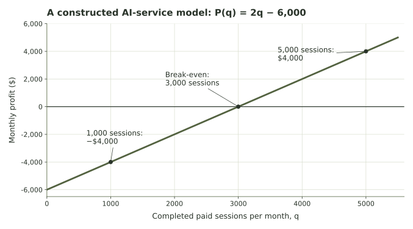

What should an AI service optimize?
Use a hypothetical tutoring service to distinguish profitability, access, operating cost, and the evidence a model leaves out.
What should an AI tutoring service optimize?
An AI tutoring service can be modeled as an operation with resources, costs, and goals. This week’s connection concerns the service’s operating decisions. We are not calculating how a language model generates a response.
Imagine a small service with $6,000 in fixed monthly expenses, an average computing cost of $0.40 per completed session, and revenue of $2.40 per session. These figures are constructed examples; they do not estimate a real provider’s prices or expenses.
Let q be completed, paid sessions in one month. Assume the same average variable cost and revenue apply to every session in the modeled range. A “session” is our accounting unit; real sessions might differ in length and resource use.
| Quantity | Model value | Units |
|---|---|---|
| F | 6,000 | dollars per month |
| v | 0.40 | dollars per completed session |
| p | 2.40 | dollars received per completed session |
| q | chosen volume | sessions per month |
Follow the familiar calculation
Each paid session contributes $2 toward the fixed expense before the service has covered it. Exact break-even occurs at \(2q-6000=0\), or q=3,000 sessions. The common revenue and cost there are $7,200; profit is zero.

At 1,000 sessions, cost is $6,400 and revenue $2,400, leaving a loss of $4,000. At 4,000 sessions, cost is $7,600 and revenue $9,600, leaving a profit of $2,000. Both plans have the same $2 marginal profit.
Keep totals and changes separate
Profit, access, and cost can ask different questions
Now give the service a capacity and a minimum service commitment. Feasible session counts must be whole numbers between the minimum and capacity, inclusive. Compare three objectives over that same allowed set.
Start with the default limits and compare all three goals. Then lower capacity below the minimum commitment. Why does that create a feasibility problem before we even compare objective values? Finally, set the minimum to zero and choose cost minimization.
Which outcomes does the score leave out?
More paid sessions and more modeled profit happen to favor the same quantity in this constant-price, positive-margin model. That coincidence does not make the goals equivalent in every model. A lower fee, a cost that rises near capacity, or a change in the number willing to pay could alter the comparison.
Neither a session count nor profit measures whether a student learned, whether a response was correct, or whether access was affordable. Those questions require suitable evidence and explicit criteria. A service can impose a minimum quality standard or choose another objective; the cost formula does not decide which goal society ought to prefer.
Prepare for Week 8
The commitment is a lower constraint and capacity is an upper constraint. If they conflict, there is no feasible plan. If they are consistent, the objective compares the plans between them. Week 8 develops the same separation for two decision variables.